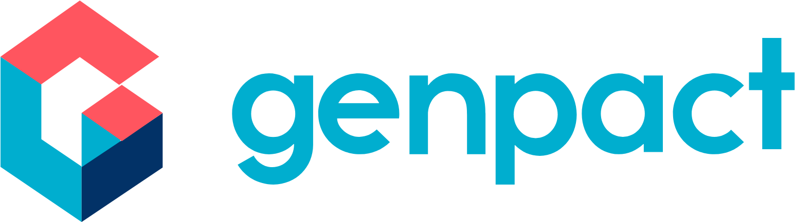
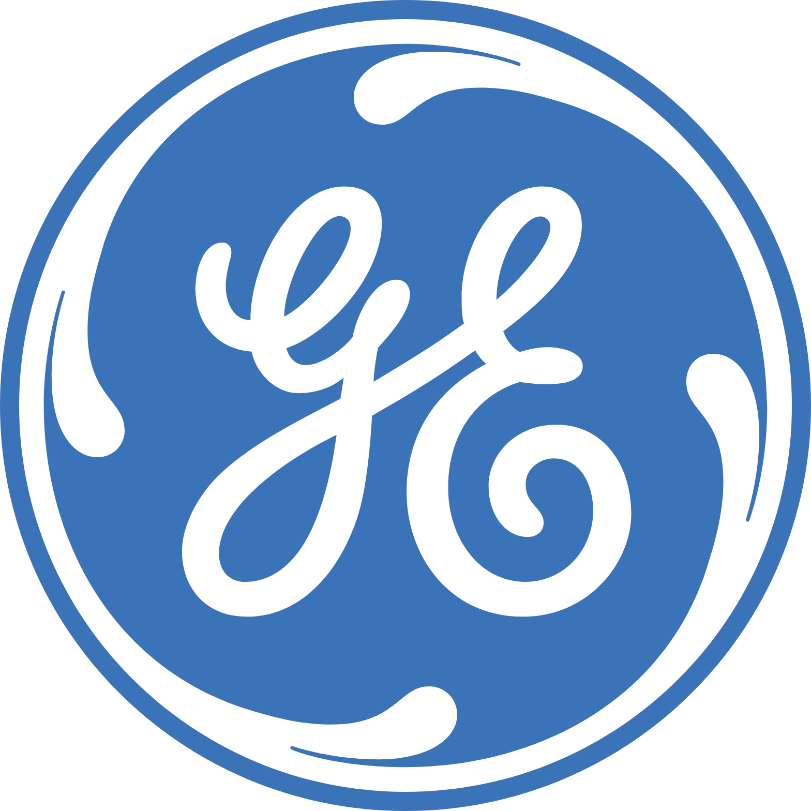

ABIR BOSE
Assistant Vice President

2019 - Now

2016 - 2019

2004 - 2015
Professional Summary
Experienced IT leader with over 21 years in the IT industry, specializing in Oracle EBS, Program Management, DevOps, Full-Stack Development, and IT Operations. Adept at managing global teams, driving digital transformation, and delivering enterprise-scale solutions across Finance, Procurement, and Supply Chain domains. Proven ability to lead complex programs and build high-performing teams.
Core Competencies
- Oracle EBS (P2P, O2C, IT Finance)
- Program & Project Management
- DevOps & Agile Methodologies
- Full-Stack Web Development
- Governance & SLA Management
- Data & Analytics
- Vendor & Stakeholder Management
- IT Transformation & Process Optimization
- People Leadership & Talent Development
Work Experience
Engagement Leader, Eastern Applications – Genpact India
2021–Now
- Lead end-to-end program delivery and operations for a portfolio of 32 enterprise applications.
- Accountable for program governance, SLA adherence, quality management, and customer satisfaction.
- Manage customer communication, escalations, and ensure timely delivery of all program milestones.
- Collaborate with cross-functional teams to ensure alignment of IT services with business goals.
- Contributed to hands-on design and development of key modules across multiple applications.
- Played a key role in ensuring compliance, consistency, and delivery excellence across multiple programs.
Product Owner – OC & S2P Applications – Genpact India
2019–2021
- Define and execute the product strategy for OC and S2P applications, including roadmap planning and feature prioritization.
- Oversee delivery of enhancements, bug fixes, and performance optimizations.
- Lead the spin-off strategy for application components, ensuring alignment with long-term product vision.
- Collaborate with engineering, business, and operational teams to deliver high-value functionality.
Data & Analytics Leader - Genpact India
2019–2022
- Lead prioritization and delivery of enhancements and new development in the B2P metric reporting space.
- Manage operations and development for dashboards built on the finance data lake.
- Evangelize product adoption among business and operations teams, promoting data-driven decisions.
Program Manager & Solution Architect – Shared Sourcing Services Dev Team - GE India
2016–2019
- Led a team of 8 GE resources and 40 vendor consultants delivering Oracle P2P solutions.
- Supported the SSS application managing $25B in invoices and $35B in purchase orders annually.
- Focused on team mentoring, coaching, and performance management to maintain a high-performing culture.
- Transformed delivery approach from waterfall to Scrum framework, enabling faster and more flexible execution.
Senior Program Manager – APEX - GE India
2018–2019
- Led the Accounts Payable Excellence Model for GE Digital across multiple business units.
- Standardized AP processes and implemented functionality in the Strategic ERP.
Delivery Manager & Solution Architect – US Motor Divestiture - GE India
2018–2018
- Led the divestiture of the US Motor business with focus on planning, cost, resource, and risk management.
- Delivered Oracle Finance and Order Management solutions aligned with business needs.
Transformation Lead – Project Dyson, GE-India
2017–2017
- Directed IT transformation for Shared Sourcing Services, achieving 30% cost reduction.
- Handled contract/SOW creation, vendor transition, and team onboarding for Project Dyson.
Transformation Lead – Insource Digital Team, GE, India
2016–2016
- Drove transition from vendor to insourced model for GE Digital’s IT development team.
- Recruited and mentored 17 GE FTEs aligned with GE’s 50–50 insourcing strategy.
Senior Program Manager – Source to Pay Development, TCS, US
2013–2015
- Led a 40-member development team to deliver scalable Oracle S2P solutions with real-time and batch interfaces.
- Designed and delivered customizations aligned with complex business requirements.
DevOps Leader – Shared Sourcing Services, TCS, USA
2012–2014
- Implemented a DevOps model that reduced operational cost by 35%.
- Established SOD and governance frameworks to ensure SOX compliance.
Transformation Leader – R12 Migration, TCS, USA
2011–2012
- Led the migration of Oracle P2P from 11.5.10.2 to R12.1.3, including 10TB of production data.
- Handled 250+ OUs, 1400 interfaces, and 450+ custom components.
Operations Lead – Production (Oracle P2P Platform)
2008–2011
- Led production operations for Oracle P2P platform across 250+ OUs, 1400 interfaces, and 450 custom components.
- Managed a team of 45 associates, handling 1500+ service requests and 50+ incidents monthly within SLA.
- Standardized processes and improved operational efficiency through simplification initiatives.
Implementation & Operations Lead – Oracle P2P/O2C, TCS, India/USA
2004–2008
- Implemented Oracle EBS for Order to Cash and Procure to Pay cycles across multiple GE business units.
- Led a 20-member team across India and the US for rollout and post-implementation support.
Skills
Data and Analytics
Full Stack Development
DevOps and Agile Methodologies
Oracle EBS - IT Finance
Project and Program Management
People Leadership and Talent Development
Vendor and Stakeholder Management
IT Transformation and Process Optimization
Product Ownership
Certification and Honors
Oracle Certified Associate & Professional. 2007
Six Sigma Black Belt. 2013
Green Belt. 2013
Certified Scrum Master. 2018
Leadership Graduate – Crotonville University, GE. 2018
Education
M.Tech – Data Science & Machine Learning Oct 2023 – Oct 2025 (Pursuing)
PES University, Bangalore
PES University, Bangalore
B.E. – Computer Science Engineering 2000 - 2004
Visvesvaraya Technological University, Karnataka
Visvesvaraya Technological University, Karnataka
Indian School Certificate (ISC)
Bishop Westcott Boys’ School, Ranchi
Bishop Westcott Boys’ School, Ranchi
Indian Certificate of Secondary Education
Don Bosco School, Dumka
Don Bosco School, Dumka